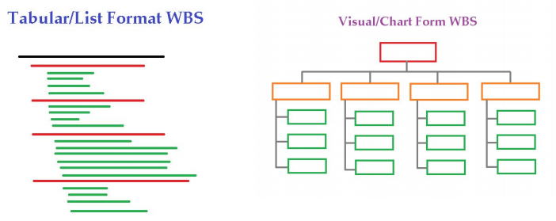

Project Scope Management
One of the major knowledge areas of project development includes project scope management. This pertains to defining what exactly will be done in all of the work included in a project, with a specific attentiveness on scale and priorities. Planning, collection of requirements, definition of scope, work breakdown structure creation, validation, and scope control are all vitally important processes within the project scope management knowledge area. Using tools such as these allows for the manipulation and management of scope, which is a critically important part of project development.
One of the many key tools in project scope management is the work breakdown structure (WBS), which is a task-oriented tree, manifesting as a type of chart. It is the foundation upon which scheduling, costs, resources, expectations, and adaptations are created. Deliverables are broken down into manageable pieces and organized in an approachable way. A clear work breakdown structure can make or break the flow of productivity within a development team, and its form will vary from team to team. Some teams prefer a more visual layout, while others prefer a tabular, list based one. Generally, each task within a work breakdown structure is known as a work package, or a single “unit of work.” They can realistically be thought of as sub-projects of the larger project as a whole.
The first step is resource planning; in this process, a project manager identifies the project's resources. This step takes place before any work is done. The second step is cost estimation; this is the process of attaching a monetary value to the resources required for the project. There is a lot of information required for cost estimation, including the resource requirements, their price, duration, etc.. The third step is cost budgeting; in this step, a project manager will assign the cost to each part of a project. The third step also sets up a budget for unexpected costs. The last step is cost control; in this step, a project manager can increase the budget or reduce work scope. This last step takes place throughout the project's entire lifecycle.
Another topic to mention would be scope creep, which is a critically important concept in this knowledge area, referring to the tendency for project scope to keep getting bigger and bigger, or “creep”. Oftentimes, it can be tempting to raise the requirements and focus of the project as the developers and designers themselves become increasingly ambitious about what they can accomplish. This leads to the over-expansion of requirements and expectations, which are doomed to disappointingly fall short. One famous example can be found in the ubiquitous McDonald’s Restaurants. In 2001, McDonald’s Restaurants launched an ambitious initiative to implement a large interconnected intranet network which would allow for real time monitoring of many extremely detailed metrics and metadata. Its scope would include every single store(many tens of thousands) in 120 countries. McDonald’s invested $170 million on the idea, only for it to be prematurely terminated(McDougall). Ambition is often an extremely necessary part of any initiative, but left unchecked, it can ruin any progress made in the first place.
Sources:
Paul McDougall, “8 Expensive IT Blunders,” InformationWeek (October 16, 2006)